For more information about Effects in general, please see the Effects Rack Overview section.
Dynamics Effects
The Blitzer™
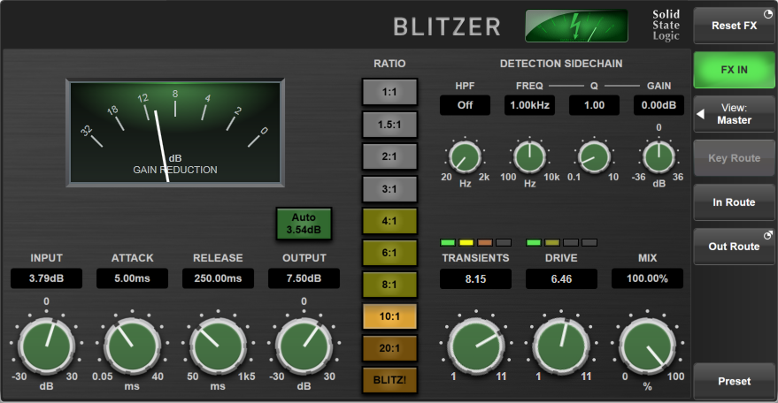
The Blitzer is an ultra-versatile compressor that can produce soft saturating compression to explosive brick-wall limiting. It includes adjustable transient shaping and vintage-style harmonic drive options for colouration.
Use the INPUT gain control to adjust the signal level reaching the compressor and the OUTPUT gain to trim the output level of the compressor.
The Auto Output Gain button automatically applies an amount of Output makeup gain to compensate for the Input gain and compression ratio used. Note that the amount of makeup gain applied to counteract the Input gain is only approximate, as the compression curve depends on many factors; once Auto is engaged and the other compression parameters set, the Output gain can be manually adjusted further to provide a higher degree of level matching between wet (compressed) and dry signals. This is particularly important if using the Mix control (described below) to blend the two signals together.
ATTACK and RELEASE controls adjust the envelope characteristics of the compressor.
Use the RATIO buttons to select a compression ratio. The 1:1 mode can be used to add character to a signal without affecting its dynamic range, while BLITZ! mode offers the ultimate slamming compression.
TRANSIENTS and DRIVE offer a host of colouration options, allowing the signal transients to be shaped and harmonic warmth to be added. The respective meters offer indication of the amount of colouration being added to the signal.
The DETECTION SIDECHAIN controls can be used to alter the frequency content of the signal keying the compressor, e.g. to remove LF content to avoid pumping from kick drum transients activating the compressor.
MIX controls the balance of the compressed ('wet') to uncompressed ('dry') signal. Turn fully clockwise to 100% for a fully wet output from the compressor.
Bus Compressor
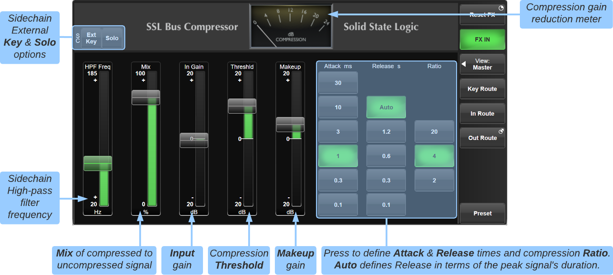
The Bus Compressor plug-in is based on the legendary centre section Bus Compressor found on SSL's large-format analogue consoles. It provides high quality stereo compression, giving you critical control over the dynamic range of audio signals.
Uses may include inserting the bus compressor over a stereo mix, which has the effect of 'gluing' the mix together whilst still maintaining a big sound. The dynamics of drum overheads or whole drum kits can be controlled very effectively with the bus compressor. As it is available as either a stereo or mono plug-in the bus compressor can be used for practically any application that requires superior compression.
The In Gain and Threshld controls can be used to alter the signal's level into the compressor to adjust the amount of compression being applied.
The Makeup gain control is used to trim the signal exiting the compressor circuit to 'make up' any reduction in level that has been applied by the compressor.
Attack, Release and Ratio controls alter the characteristics of the compressor.
Note that the knee point of the compressor, set with the Threshold control, purposely changes depending on the setting of the Ratio control. Decreasing the Ratio setting lowers the effective threshold, hence maintaining the perceived 'loudness' of the compressed signal.
The amount of gain reduction being applied is indicated by the analogue-style meter in the banner area of the effect.
Mix controls the balance of the compressed ('wet') to uncompressed ('dry') signal.
Sidechain Options
In normal operation the signal feeding the detection section (sidechain) of the Bus Compressor is the same as the audio signal being processed by the module. However, it is possible to route a different signal to the sidechain input. This causes the signal routed through the effect to be processed based on the properties of the external 'key' signal. Use the Key Route button to route the key input signal and engage the Ext Key button to activate External Key mode.
A high-pass filter (HPF) is also included in the sidechain. This can be used to filter out low frequencies to prevent the compressor from 'pumping' with low frequency transients such as kick drum hits. Use the HPF Freq fader to adjust the corner frequency of the filter (set to its minimum position to bypass the HPF completely).
Use the sidechain Solo button to listen to the key signal being used by the compressor (post Ext Key and HPF options).
Listen Mic Compressor
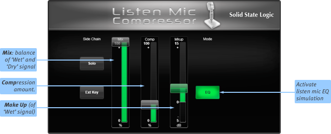
The Listen Mic Compressor emulates the sound of the listen mic on an SSL E series console. Originally designed to prevent overloading the return feed from a studio communications mic, its fixed attack and release curves were eminently suitable for use on ambient drums mics, and it became a classic production tool.
Mix controls the balance of the compressed ('wet') to uncompressed ('dry') signal. Note that MakeUp only acts on the 'wet' part of the signal.
Comp controls the amount of compression, from 0 to 100%.
MakeUp controls the level compensation for the gain reduction.
To simulate the original narrow-band listen mic characteristic, activate the EQ button – to use the compressor on the full frequency range, leave EQ inactive.
Note: Listen Mic Compressor features very quick time constants. This means it is easily capable of producing distortion on low frequency material.
Multi-Band Compressor
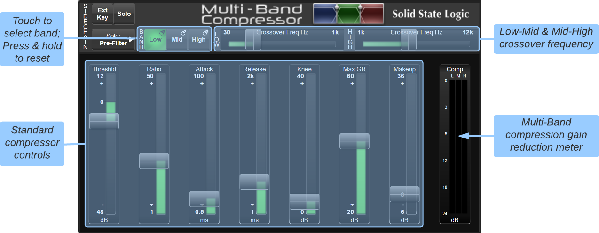
There are three bands of compression available within the Multi-Band compressor; touch the Low, Mid or High buttons in the top left to define which band is being edited in the rest of the window. The sliders to the right of the buttons define the crossover frequencies between Low and Mid bands, and between Mid and High bands.
|
Each band's controls should be self-explanatory. The possible exception may be Max GR which limits the maximum amount of gain reduction, meaning that peaks which are well over the threshold are only attenuated up to the Max GR value. The rest of the dynamic range is left unaltered, and behaves as expected according to the other controls. To reset a band, press & hold the relevant Low/Mid/High button and select Reset; To reset the whole module, press & hold Reset FX. |
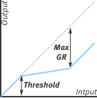 |
Sidechain
In normal operation the signal feeding the detection section (sidechain) of the Multi-Band Compressor is the same as the audio signal being processed by the module. However, it is possible to route a different signal to the sidechain input. This causes the signal routed through the effect to be processed based on the properties of the external 'key' signal. Use the Key Route button to route the key input signal and engage the Ext Key button to activate External Key mode.
It is possible to Solo the sidechain signal in various places. Use the Solo: button to choose the solo source point; the full range Pre-Filter point or after one of the Low, Mid or High bands.
De-Esser
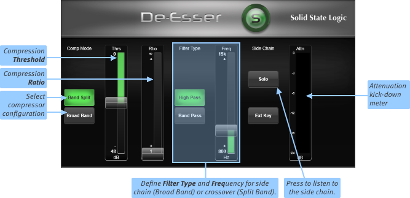
The De-esser is a compression and filter system which can be used to remove sibilance or other frequency-dependent artefacts.
Definition: Sibilance is the resonance often found on vocal mics which can result in 'S' consonants becoming too pronounced.
|
Start by selecting which configuration of de-esser to use. The diagrams to the left explain the difference between Broad Band and Band Split de-esser configurations. Set the Filter Type and Frequency to ensure the de-esser is responding to the right frequency range. Note: The filter position within the de-esser depends on the compressor configuration, as shown left. Move the Threshold control to set the detection level at the point where the De-esser only acts on sibilant peaks. Move the Ratio knob to control how much sibilance is removed. |
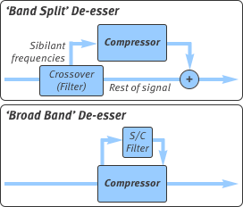 |
To listen only to the sibilance that is being removed, press the Solo button. This can be particularly helpful in ensuring that the threshold is correctly set.
An attenuation (Attn) meter is shown to the right of the Solo button.
Dynamic EQ
The Dynamic EQ is available with 1-, 2- or 4-bands of EQ; each band is colour coded. Each band boosts/cuts frequencies up to the maximum Range value. This gain is scaled by the compression sidechain circuitry, which is altered by the Threshold, Ratio and other dynamics controls.
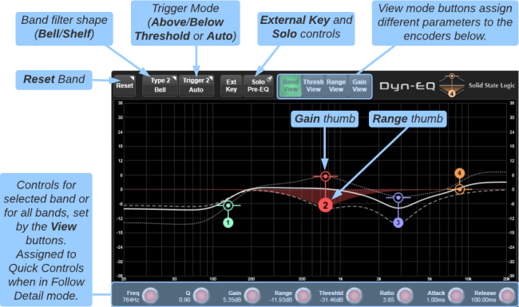
For each band the following controls are available:
- Filter Type - The shape of the EQ filter; Bell, Low Shelf or High Shelf
- Trigger Mode - Determines whether the dynamic EQ acts Above Threshold, Below Threshold or Auto (Range-dependent; see below)
- Frequency - The centre frequency of the EQ band
- Q - The width of the EQ band
- Gain - The baseline gain from which dynamic EQ changes occur
- Range - The largest gain boost/cut that will be applied, relative to the baseline Gain
- Threshold - The level (above or below, depending on the mode) at which the dynamic EQ band becomes active
- Ratio - The amount of gain reduction when the dynamics section is active
- Attack & Release - The attack and release times of the dynamics section
Note: Dynamic EQ has an auto knee that goes from 12 dB when the compression ratio is 1:1 to 0 dB when the ratio is ∞:1, i.e. it becomes progressively harder as ratio increases.
The View buttons at the top of the display determine the controls available on the encoders below the graph (and on the Quick Controls if Follow Detail is enabled). These are:
- Band View - Shows Freq, Q, Gain, Range, Threshld, Ratio, Attack and Release for the selected band
- Thresh View - Shows Freq and Threshld for all bands
- Range View - Shows Freq and Range for all bands
- Gain View - Shows Freq and Gain for all bands
Trigger Mode
A per-band Threshold Trigger mode allows the threshold trigger to operate in one of three ways:
- Auto - Dynamic EQ operates in cut mode when Range is negative and signal is above the Threshold, Dynamic EQ operates in boost mode when Range is positive and signal is below Threshold
- Above Threshold - Dynamic EQ triggered when sidechain signal is above the Threshold (regardless of Range setting)
- Below Threshold - Dynamic EQ triggered when sidechain signal is below the Threshold (regardless of Range setting)
Using the Graph
The 'bullseye' thumbs indicate the baseline Gain applied to each band when no 'dynamic' element of EQ is being applied. The round thumbs adjust the Range (maximum boost/cut) of each band. Horizontal dotted lines appear when either thumb is touched to indicate the range of adjustment available. Pinching the graph when either thumb is highlighted adjusts the Q of the band.
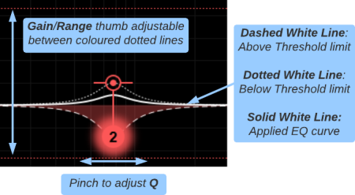
Dashed and dotted white lines indicate the Above and Below Threshold limits respectively. The solid white line plots the applied EQ in real-time, between the Above and Below Threshold limit lines.
For example, if the Trigger mode is set to Above Threshold the solid EQ plot line will sit on the dotted Below Threshold limit line (as set by the baseline Gain parameter) until the signal exceeds the Threshold, at which point the EQ plot line will move towards the dashed Above Threshold line (as set by the Range parameter) according to the signal level and values of the Threshold, Ratio and other sidechain dynamics parameters.
In the example image above a positive Gain has been dialled in and the band is in Above Threshold mode, meaning that when the signal is below the Threshold the band will be boosted. But as soon as the signal exceeds the Threshold, the negative Range parameter will cause the band to be attenuated, up to the maximum amount determined by the Range value.
Tip: Use the Reset button to reset an individual band, or press & hold the FX Reset button to reset the entire effect module (all bands).
Sidechain Options
In normal operation the signal feeding the detection section (sidechain) of the Dynamic EQ is the same as the audio signal being processed by the module. However, it is possible to route a different signal to the sidechain input. This causes the signal routed through the effect to be processed based on the properties of the external 'key' signal. Use the Key Route button to route the key input signal and engage the Ext Key button to activate External Key mode.
To audition the full range sidechain input or an individual band, use the Solo button. Press to toggle Solo on/off. Press & hold to select the solo source (Pre-EQ, Band 1, Band 2, Band 3 or Band 4).
Gate
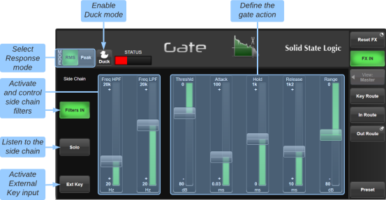
To activate the Gate, drag the Range down to a suitable level. The Range controls the dynamic range over which the gate operates.
The buttons in the top left allow you to select between RMS and Peak response mode.
The Threshld control defines the audio level at which the gate is opened to allow audio through.
Note: The level at which the gate opens is higher than the level at which it closes again. In other words, when the gate is opened, it stays open until the signal level crosses the quieter 'close' threshold. This is known as hysteresis and is very useful as it allows instruments to decay more naturally. The Threshld control refers to the 'open' threshold.
Hold controls the delay before the signal level starts reducing again, and Release controls how quickly the level then reduces. Attack controls the time taken for the Gate to 'recover' once the signal level is above the open threshold. 1.5 ms (per 40 dB) is a good Attack starting point, though percussive sounds may require an attack in the region of 0.1 ms.
Engage the Duck button to turn the Gate into a Ducker. This inverts the operation of the Gate's sidechain threshold logic, allowing the incoming signal to be attenuated by the Range amount when the sidechain (key) input signal exceeds the Threshold, e.g. to duck the music when a DJ speaks.
The 'traffic lights' towards the top-left indicate the gate's status: red indicates that the gate is closed (no audio is being passed), green that it is open (audio is being passed at full level), and yellow that it is opening or closing.
The meters at the right of the module show the module's input and output levels.
The Sourcerer™ - Primary Source Isolator
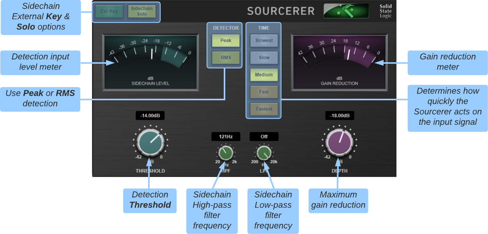
The Sourcerer is a dynamics module capable of drastically reducing or even eliminating feedback and stage bleed from open mics, providing greater signal clarity to the channel's primary source. It's simply magic!
The Sourcerer can be inserted over individual Channels or across groups of Channels through the use of a Stem or Aux bus.
Adjust the THRESHOLD control so that ambient signals do not cause the SIDECHAIN LEVEL meter to exceed the blue shaded area.
Start with the TIME mode set to Slow or Medium and the DETECT controls set to Peak with the LPF and HPF filters Off (fully clockwise and counter-clockwise respectively).
Increase the DEPTH control until the ambient noise is reduced sufficiently. The amount of noise reduction is indicated on the GAIN REDUCTION meter.
Perfecting the response of the Sourcerer is a matter of trial and error. Select a slower Time mode if the primary source signal is prematurely attenuated, or a faster one if the gain reduction is not acting quickly enough when transitioning between ambient and desired source passages.
Use the HPF and LPF controls to limit the frequencies reaching the detection circuitry (these control do not affect the main signal). This can further improve the sidechain detection sensitivity to ambient noise and feedback. The Sidechain Solo button can be used to audition the filters.
Engage the Ext Key button to trigger the detection circuitry from a different signal path to the one you are trying to isolate. The Sourcerer will then only attenuate the main signal when the 'Key' input signal is below the Threshold level. This can be useful if inserting the Sourcerer over a group (e.g. backing signers) and triggering from a dedicated microphone an individual in the group.
Transient Shaper
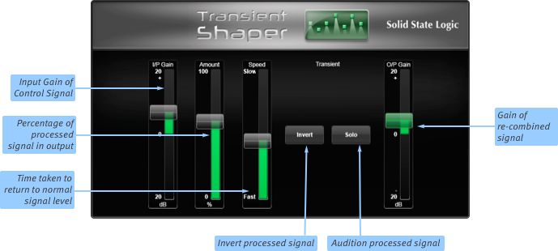
The Transient Shaper uses an expander to add attack to the start of percussive sounds by increasing the amplitude of the attack portion of the signal whilst leaving the decay unchanged.
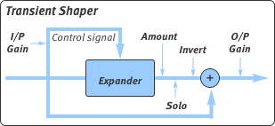 |
I/P Gain controls the detection level of the controller signal, and should be set so that only the transients you want to shape are detected. If this is set too low then the Shaper will do nothing; if it is set too high then the Shaper will detect too many transients, resulting in an exaggerated process, and the attack appearing too long. The default setting of 0 dB should be a good starting point. Note: I/P Gain doesn't directly affect the output signal's gain. |
Amount controls the amount of the processed signal added to the unprocessed signal. This process can increase the peak level of a signal significantly so watch the output meter carefully.
Speed controls the length of time the added attack takes to fall back down to the normal signal level once it has reached the top of the attack phase.
Press Invert to invert the processed signal so that it is subtracted from the unprocessed signal. This has the effect of softening the attack, resulting in more body in a percussive sound.
Solo allows you to listen to the processed signal, to assist in the set up process.
Note: When the Invert and Solo buttons are both pressed, the signal will not be inverted.
Useful Links
Effects Rack OverviewDelay Effects
EQ Effects
Modulation Effects
Reverb Effects
Other Effects Modules
Audio Tools
Automix
Index and Glossary